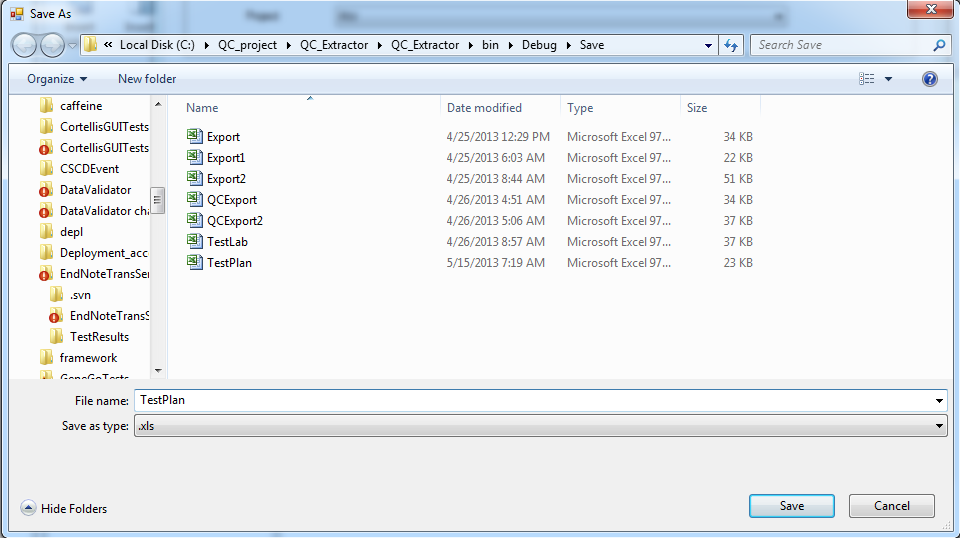
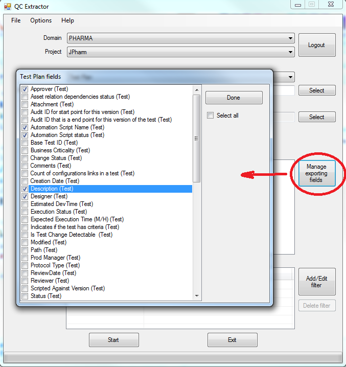

Test's data will be saved to Excel file. Button "Select" near Save to field opens Save dialog :

Test data, that will be exported to .xls file can be managed by Exporting Values List. Only values added to List will be exported to output file
To add or remove exorting fields click "Manage exporting fields" button, check/uncheck required fields and press "Done".
Also you can select/deselect all fields by checking/unchecking "Select all" check box.

Button with left arrow allows remove values from Exporting list
Note : at least one value should be added to Exporting list before start test extraction